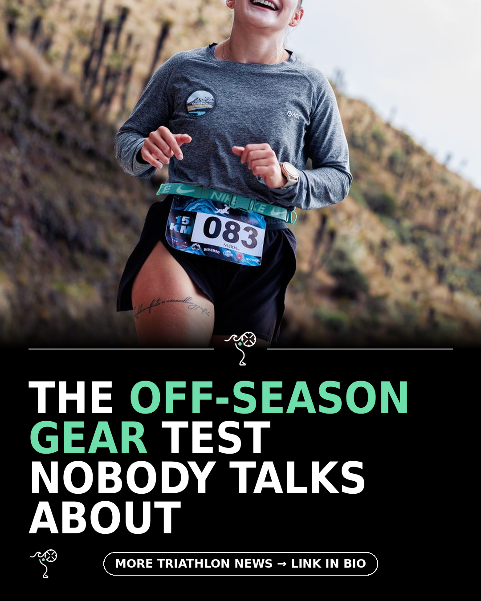

Triathlon News Daily
Saturday, 19 September 2026 · generated automatically

Today's stories
- Nine long-sleeve running tops put through a cold-weather test220 Triathlon
- An open-water coach ranks the ten best swim changing robes220 Triathlon
- Why riding your race course on ROUVY before race day changes everything220 Triathlon
- Why joining British Triathlon in the off-season pays off220 Triathlon